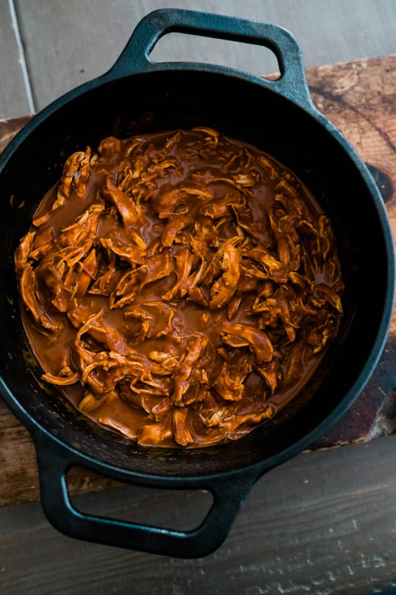

Chicken Mole

Shredded Chicken Mole
A very common yet delicious dish of Mexico
Ingredients
- Chicken breasts
- Mole
- Chicken Broth
- Sugar
- Salt & Pepper
Instructions
- Cook the chicken breasts in hot water.
- After the chicken is cooked, shred the breasts and season it with salt and pepper.
- Pour some chicken broth in a cooking pot.
- Add sugar to the pot.
- Keep addin sugar and chicken broth until it gets the consistency you wish.
- Add the shredded chicken and mix.
You can have some red rice with this dish and corn tortillas also.